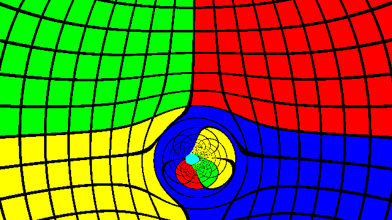
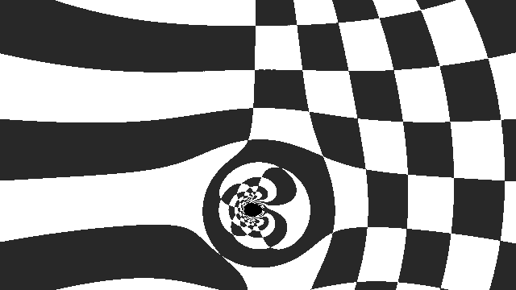
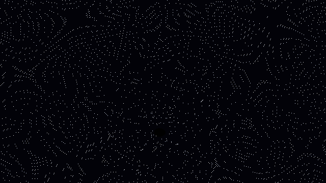
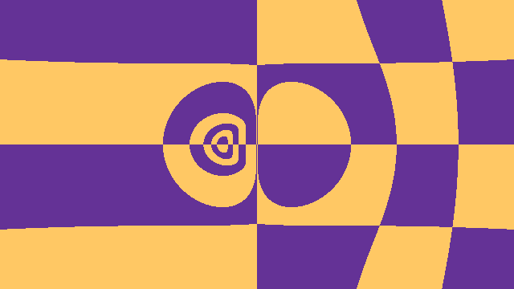

Gallery

Accretion Disk
Glowing disk with temperature-dependent colors. Approaching matter is blueshifted, receding matter is redshifted.

Gravitational Lensing
Light bends around the black hole, creating characteristic distortions of the celestial sphere.

Checkerboard Pattern
A checkerboard background reveals the precise warping of spacetime geometry.

Starfield Background
Stars appear distorted and duplicated due to multiple light paths around the black hole.

Ellis Wormhole
A traversable wormhole connecting two regions of spacetime. Light travels through the throat.